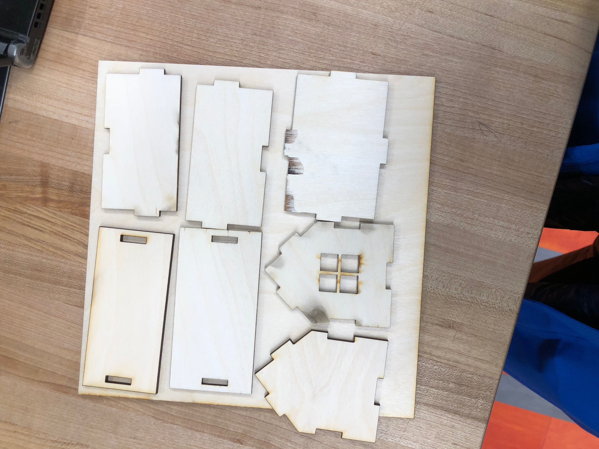
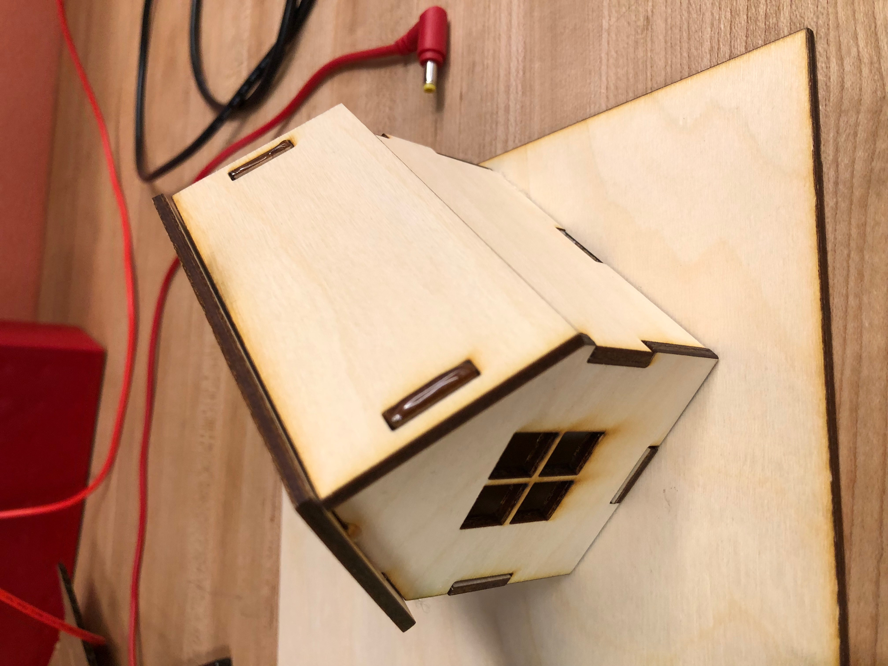
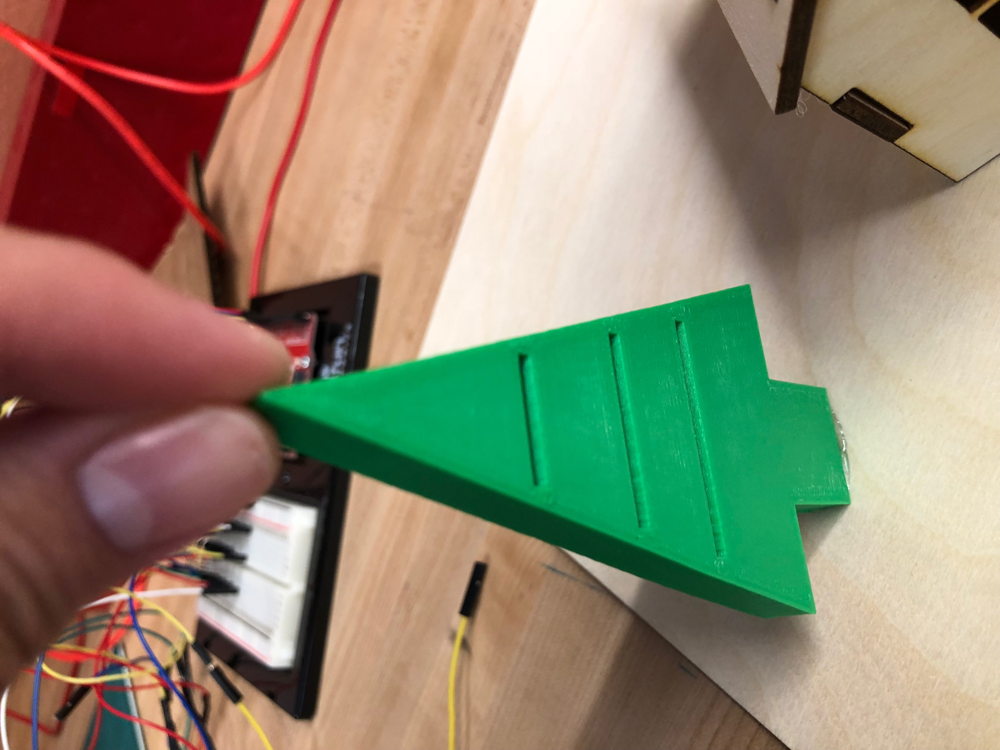
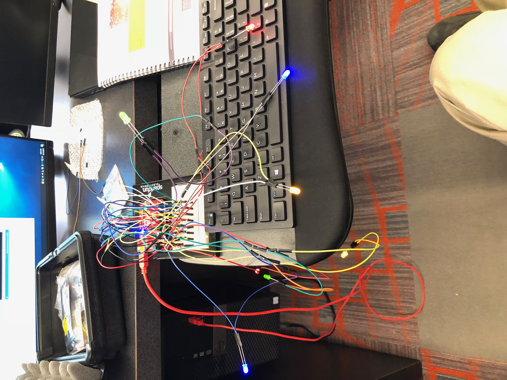
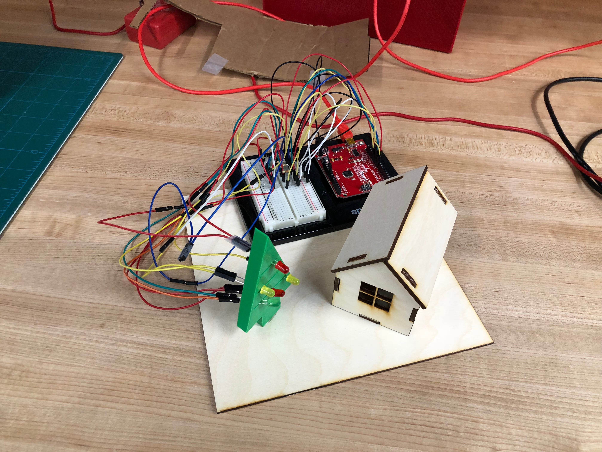

|  |  |  |  |  |
|---|---|---|---|---|
| This week we work on our final project. I am planning to make a Chrismas-themed decoration. First, design a wood house in CorelDraw and laser cut it. | Put the house together. | Use Fusion 360 to make a model of Chrismas tree and 3-D print it. Leave some space in the tree so that later I can stuck the LEDs on the tree. | Connect several LEDs to Arduino so that they can blink. Then, insert the LEDs on the tree and reconnect the wires. This is the messiest part because wires are too long and can not hide behind the tree, and wires may drop from the LED so some tape can be used. I put a cardboard as a background to hide the wires. | Put everything together. As classmates suggested, the cardboard could be printed with a winter theme to make it look better. Some music can also be added for Arduino to play. Click here to download all original files |